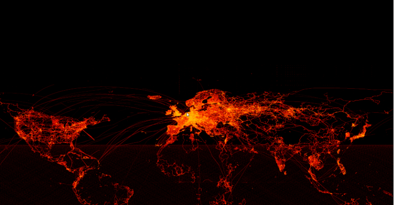

Makie is a modern plotting library for Julia which is easy to use yet fast and powerful. It's packed with features and the goal is to be not limited to any special use case, while making as few compromises as possible.
Explore billions of data points

Dashboards on the Web

Publication ready SVGs

Photorealistic renderings

Video games

Features
Surgical updates & high performance

Makie updates only what's needed using Observables.jl.
This example animates hundred thousand of points, by just updating the color, which only updates a few bytes per frame directly on the GPU.
There's no faster way to animate large data, so Makie, together with utilizing the GPU and Julia's high performance, is fit for any task!
Powerful Layouting
Makie has one of the most powerful layouting systems compared to other plotting
libraries, allowing you to tweak any possible attribute and place your plots
and subplots freely. No need to use inkscape anymore to redo your layout!

2D, 3D, Volumes, Meshes, Sliders, Buttons and more

Makie has support for all kind of primitives for interactive data exploration. This makes it simple, to quickly build up dashboards for any kind of data.
Backends
Makie's backends are the reason, why we can have high quality vector graphics for publication, while also delivering fast GPU accelerated renderings.
Use exactly the same code, and change how your interactive graphic is displayed simply by switching the backend.
GLMakie

CairoMakie

WGLMakie

RPRMakie

Rich Ecosystem
To cater to every use case, without becoming a big, bloated library, Makie is highly modular and extensible.
What Makie doesn't offer out of the box, gets supported by a rich 3rd party ecosystem:
GeoMakie.jl

Tyler.jl

FerriteViz.jl

GraphMakie.jl

BioMakie.jl

TopoPlots.jl

ModelingToolkitDesigner.jl

PairPlots.jl

AlgebraOfGraphics.jl

TidierPlots.jl

MeshViz.jl

OSMMakie.jl

GeneticsMakie.jl

IncompressibleNavierStokes.jl

InteractiveViz.jl

MakiePublications.jl

UnfoldMakie.jl

NestedGraphMakie.jl

MakieDraw.jl

Agents.jl

Users


Supporters


Follow us